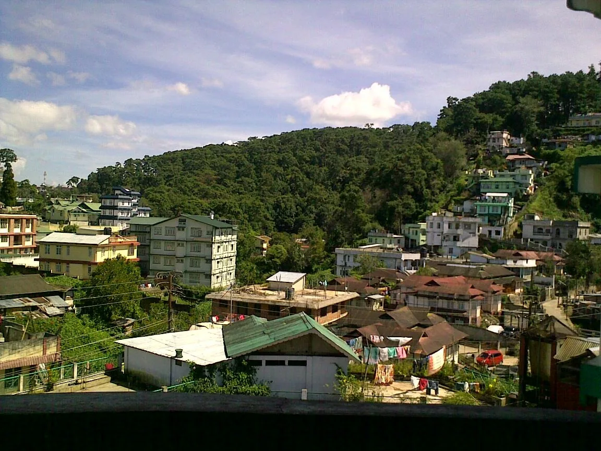
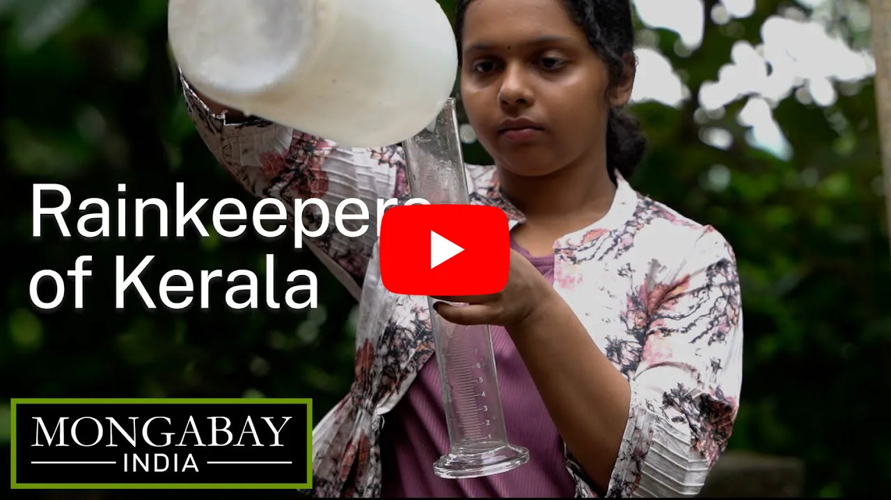
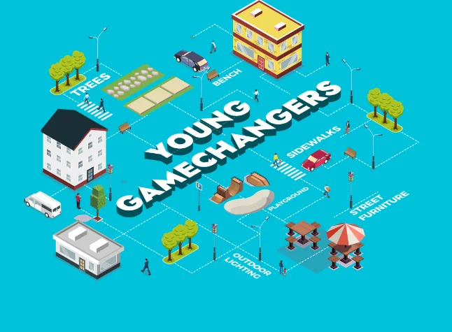
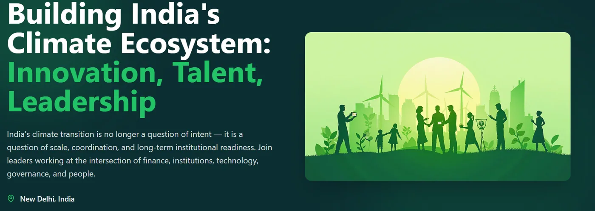

Source: Wikimedia Commons
Cities are often presented as products of planning, shaped through data, technical expertise, and formal systems of governance.
April 2026
Cities are often presented as products of planning, shaped through data, technical expertise, and formal systems of governance. Yet this framing only captures part of how cities actually function.
Much of what makes urban systems work is negotiated daily by residents who navigate gaps in infrastructure, organise around shared needs, and respond to risks that institutions are not always able to address in time.
For decades, community engagement has been positioned as a way to bridge this gap. In practice, however, it is often structured as consultation, invited at specific moments and bounded by predefined agendas, without always translating into sustained influence over decisions.
Participation, in this sense, can become visible and measurable, but still remain disconnected from how planning priorities are ultimately set.
At the same time, a growing body of work across research, practice, and policy is beginning to reframe this relationship. Communities are not only responding to cities, but actively shaping them; collecting and producing data, managing shared resources, and coordinating responses to challenges such as climate risk, service delivery, and urban development. These forms of engagement are not always easily integrated into formal systems, but they are increasingly central to how cities adapt, particularly where institutional capacity is uneven.
This raises a more fundamental question for urban governance: if communities are already playing a significant role in shaping cities, what does it mean to continue treating them as peripheral to planning? The examples in this edition explore this shift in practice - from community-led tourism and heat adaptation to citizen-generated data and new forms of participation - pointing to a broader rethinking of engagement, not simply as an input into planning, but as a space where urban systems are continuously shaped and reworked.
![Siddharth Pandit]()
Siddharth Pandit
CEO, Urban Collective Action Network · On behalf of U-CAN

Source: Wikimedia Commons
As tourism expands rapidly across Northeast India, a growing set of initiatives are attempting to shift how it is organised, and who it serves. Writing for Question of Cities, Sugandhi Prapti and Nikeita Saraf examine the rise of community-based tourism across states like Nagaland, Meghalaya, and Sikkim, where local communities are increasingly involved in hosting, guiding, and shaping visitor experiences.
Positioned as an alternative to large-scale, festival-driven or infrastructure-heavy tourism, these models emphasise local ownership, cultural integrity, and ecological sensitivity. From homestays and village cooperatives to community-led tour operations, they offer a way to distribute economic benefits more locally while embedding tourism within existing social and environmental systems. At the same time, the article does not romanticise the model, rather it highlights tensions around scaling, uneven implementation, and the risk of “community” becoming a branding device for otherwise commercial operations.
For cities and urban practitioners, the piece offers a useful lens on a familiar challenge: how to balance growth with sustainability and local agency. As tourism-driven urbanisation intensifies, bringing infrastructure expansion, ecological stress, and cultural commodification, the question is not just how to attract visitors, but how to structure tourism in ways that do not erode the very communities and environments it depends on.
As cities confront rising temperatures, a growing body of work points to the role of communities in designing and implementing local responses to heat stress. Community-driven Heat Solutions Compendium, developed by Transitions Research, brings together case studies from across geographies, documenting interventions that range from restoring urban water bodies and reviving traditional cooling systems to neighbourhood-led greening and shading initiatives.
Across cases, communities are not just participating in implementation but shaping how problems are defined and addressed, whether through managing shared resources, adapting local infrastructure, or combining lived knowledge with technical inputs. The compendium highlights a consistent gap in urban governance: while such approaches are widespread and effective, they remain weakly integrated into formal planning frameworks and policy systems.
At a moment when community engagement is often reduced to consultation, the examples offer a more expansive view of what it means to co-produce urban resilience in practice.
As cities place increasing emphasis on citizen engagement, a key question persists: when and how do citizens actually shape decisions? Drawing on research by Nagrika, authors Tarun Sharma and Yutika Vora offer a useful lens by distinguishing between “invited” spaces (where governments seek public input through consultations, platforms, or formal mechanisms) and “created” spaces (where citizens organise independently to influence outcomes, from protests and campaigns to placemaking initiatives.) What emerges is a more complex picture of participation in practice. While both forms of engagement are expanding, they often operate in parallel rather than in coordination. Digital platforms, ward committees, and national programmes have widened access, but meaningful influence remains uneven, particularly when participation is limited to early-stage consultations or disconnected from decision-making processes.
For practitioners and policymakers, the piece offers a way to make sense of a familiar challenge: why engagement efforts often feel active but not impactful, and what it might take to move from episodic consultation to more continuous, embedded forms of citizen involvement.

In the aftermath of the 2018 floods in Kerala, residents across river basins began building their own systems to track rainfall and rising water levels, turning lived experience into real-time data for disaster preparedness. In this piece published in Mongabay, Arathi M.R. writes on how citizen- led monitoring groups are filling critical gaps in official datasets, using low-cost tools and shared reporting to enable earlier and more localised responses to flood risk.
What stands out is not just the generation of data, but its direct use in decision-making. Across flood-prone regions, community members track rainfall daily, share alerts, coordinate evacuations, and even manage local infrastructure in moments of crisis. In several instances, these early signals and actions have helped prevent loss of life, often in contexts where formal forecasting and response systems remain limited or delayed.
The piece points to a broader shift in how preparedness is understood. Rather than positioning communities as recipients of warnings, it shows how they are actively producing knowledge, shaping responses, and increasingly influencing formal systems, with efforts underway to integrate community-generated data into state-level disaster management frameworks. For urban practitioners, it offers a useful provocation: what would it mean to treat community-generated data not as supplementary, but as central to how cities and regions plan for climate risk?

Models & Programs for Youth’s Governance & Participation in Planning: More Inclusive & Sustainable Cities, published by UN-Habitat, examines a range of global initiatives to understand how young people engage in urban governance and planning processes. Drawing on programmes supported by UN-Habitat and other partners, the report analyses models of participation, from consultative approaches to youth-led and co-governed initiatives, and assesses their effectiveness in shaping policy and planning outcomes.
A key insight from the report is that participation is most effective when it moves beyond one-off consultation toward sustained engagement, where young people are involved not only in discussions but also in research, data collection, and knowledge production that informs planning processes. These approaches shift participation from expression to co-production of evidence, generating more grounded and context-specific inputs into urban planning, particularly where formal data systems are limited.
One example of this approach is the Young Gamechanger Initiative, implemented in Jatni (India) alongside Armenia (Colombia) and Bargny (Senegal). Supported by Foundation Botnar, UN- Habitat, the World Health Organisation, and Block by Block Foundation, the programme uses tools such as Minecraft to enable young people to express and develop visions for more equitable and healthy city systems. Over a three-year engagement, it works with municipalities, researchers, and civil society partners to translate these contributions into structured inputs for planning processes, and tracks how youth participation influences institutional practices and public space outcomes.
A broader pattern emerges from these initiatives. As participation becomes more structured, communities are increasingly involved not only as stakeholders but as contributors to the production of knowledge and data that inform urban planning decisions. However, community- generated knowledge is not always formally recognised within planning systems, and questions of standardisation, validation, and ownership continue to limit its uptake. Strengthening urban governance, therefore, will depend not only on expanding participation, but on creating pathways for communities to contribute to how knowledge about the city is produced and used.
Civic participation in Indian cities averages just 0.27; equivalent to engaging in only one activity beyond voting.
Data from Citizenship, Inequality, and Urban Governance in India: Findings from 14 Cities (Patrick Heller, Siddharth Swaminathan, Ashutosh Varshney et al., 2025) show that while many urban residents do participate in civic life, this engagement is typically limited to a single channel, whether attending ward committee meetings, joining resident welfare associations, or taking part in neighbourhood-level action. What is notably rare is sustained participation across multiple spaces: engagement tends to be episodic rather than embedded.
This unevenness becomes clearer across cities. In Bhubaneswar, residents are nearly twice as active as in Delhi, pointing not just to differences in participation levels but in the kinds of civic ecosystems that cities enable. In some places, like Kochi, participation is more likely to take the form of civic or professional associations; in others, particularly across parts of Gujarat, it is more often organised through identity-based groups. Who participates also varies. In many cities, residents in informal settlements are less likely to be part of associations than middle- and higher-income groups, though in some contexts, this pattern reverses, suggesting that participation is shaped as much by local conditions as by structural inequality.
Rather than a simple absence of engagement, the picture that emerges is more uneven: participation exists, but is spread thinly across different channels, shaped by place, and rarely sustained across the multiple forums through which urban governance actually operates.

Climate Asia’s Annual Conference 2026, to be held on 22–23 April in New Delhi, is centred on Building India’s Climate Ecosystem: Innovation, Talent, Leadership. It comes at a moment when India’s climate transition is moving from intent to implementation at scale, bringing questions of institutional capacity, coordination across sectors, and the governance of climate action into sharper focus.
At the heart of the convening is a shared challenge: how community-led climate solutions can access the institutional support, finance, and visibility needed to grow, and how climate action can be more closely aligned with development outcomes. Bringing together leaders and practitioners across policy, finance, philanthropy, and the wider climate ecosystem, the conference creates space for exchange, learning, and collaboration across sectors.
Read or share the original edition
This edition was sent to U-CAN subscribers in April 2026. Download the PDF, or subscribe to get the next one in your inbox.
We use only essential cookies to make this site work. With your consent we would also measure anonymous usage to improve it. You can change this at any time from “Manage cookies” in the footer.